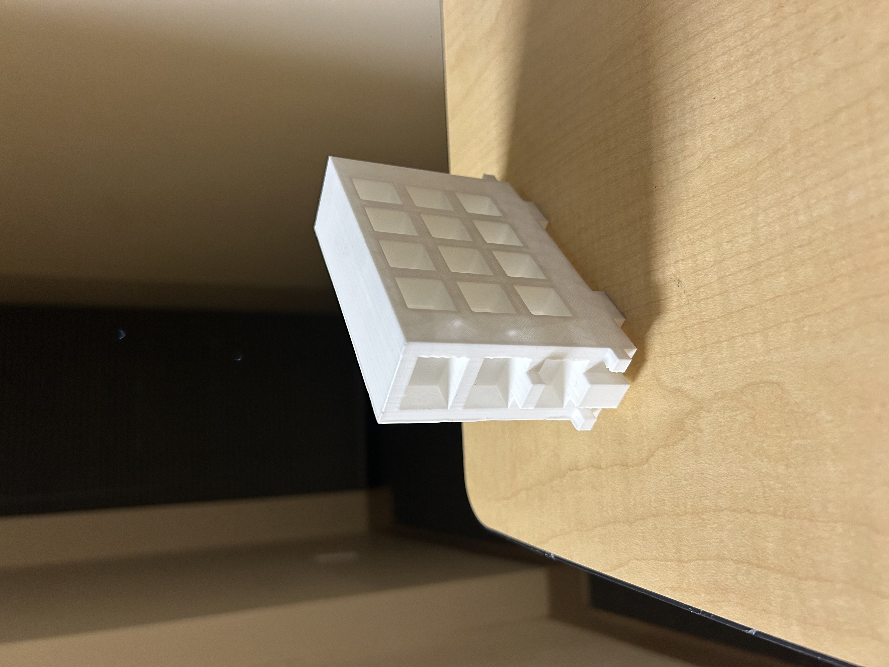

This task was to teach us about .stl and .gx file types. We had to export our build from Minecraft using Mineways, and then put it into a software called Flashprint, enabling us to print it using the 3D printers. Then we had the final stage of removing the scaffolding and painting to ensure it looked the same as our virtual builds. On the left is my first, second and final prints. The first draft was to show us how the hardware functioned and to ensure our models were printable. After this I realised the headlights and numberplate should stick out to add more dimension to the bus, and that the windows were too skinny. I changed these in Minecraft; exported; and then printed again but the second draft was printed on its side using branch scaffolding causing the walls of the windows to be too fragile to work with. Finally, I printed my last version upside down with straight scaffolding, then trimmed, sanded and painted it to accurately represent my Minecraft art piece.
